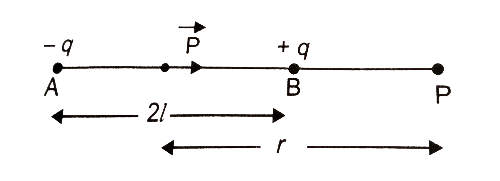
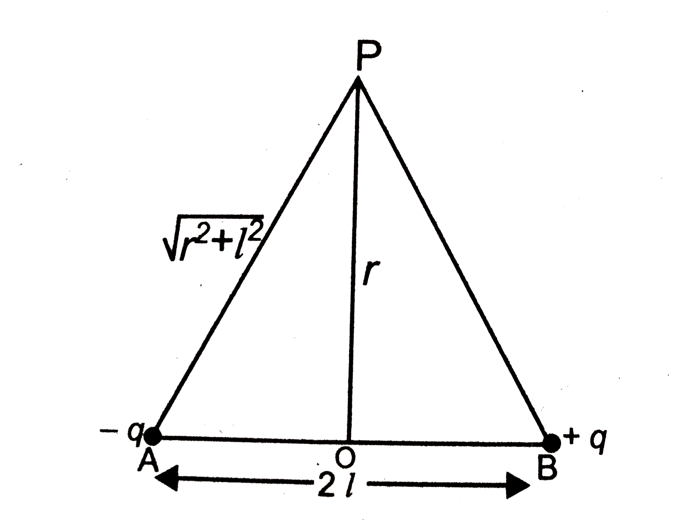
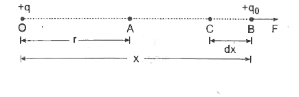

The work done in bringing a unit positive charge from infinity to a point inside an electric field is called the electric potential at that point. It is denoted by \(V\).
That is,
$$
V=\frac{W}{q}
$$
It is a scalar quantity.
Its SI unit is joule per coulomb, which is called the volt.
Definition — If one joule of work is required to bring a unit positive charge from infinity to a point in an electric field, then the electric potential at that point is said to be one volt.
Q. Write the differences between Electric Potential and Potential Difference.
Electric Potential
Potential Difference
The work done in bringing a unit positive charge from infinity to a point is called the electric potential at that point.
The work done in moving a unit positive charge from one point to another in an electric field is called the potential difference.
It is associated with a single point.
It is associated with two points.
It is represented by \(V\).
It is represented by \(\Delta V\) or \(V_{AB}\).
Its SI unit is volt (V).
Its SI unit is also volt (V).
\[
V=\frac{W}{q}
\]
\[
\Delta V=\frac{W}{q}
\]
Q. Derive the expression for electric potential due to a point charge.
Let a point charge \((+Q)\) be placed at point \(O\). We have to find the electric potential at point \(P\), which is at a distance \(r\) from the charge.
Consider a point \(A\) inside the electric field at a distance \(x\) from point \(O\). A unit positive test charge is placed at this point. The force acting on the test charge due to \((+Q)\) is
To move the unit positive test charge from point \(A\) to point \(B\) through a small displacement \(dx\), work has to be done against the repulsive force.
Thus, the potential of a conductor depends on the following factors:
1. Charge on the conductor (Q):
The potential of a conductor is directly proportional to the charge on it. Therefore, as the charge increases, the potential also increases.
2. Radius or size of the conductor (R):
The potential of a conductor is inversely proportional to its radius. Hence, as the radius increases, the potential decreases.
3. Dielectric constant of the surrounding medium (K):
The potential of a conductor is inversely proportional to the dielectric constant of the medium. Therefore, as the dielectric constant increases, the potential decreases.
Q. What is an Equipotential Surface? Write its properties.
A surface on which the electric potential is the same at every point is called an equipotential surface.
Properties of an Equipotential Surface:
1. No work is done in moving a charge from one point to another on an equipotential surface.
2. The electric potential is the same at every point on an equipotential surface.
3. Electric field lines are always perpendicular to an equipotential surface.
4. Two equipotential surfaces never intersect each other.
5. Equipotential surfaces are closer together where the electric field is stronger.
6. The surface of a conductor is always an equipotential surface.
Q. Why do two equipotential surfaces never intersect each other?
If two equipotential surfaces were to intersect, the point of intersection would have two different values of electric potential, which is impossible. Since the electric potential at a point has only one definite value, two equipotential surfaces can never intersect each other.
Q. Derive the expression for electric potential at a point on the axial (End-on) position due to an electric dipole.

Consider an electric dipole \(AB\) consisting of charges \(-Q\) and \(+Q\) separated by a distance \(2l\). Point \(P\) lies on the axial line of the dipole at a distance \(r\) from the centre \(O\).
From the figure,
$$
AP = r + l
$$
$$
BP = r - l
$$
The potential at point \(P\) due to the charge \(+Q\) is
Q. Prove that the electric potential at any point on the equatorial position of an electric dipole is zero.

Consider an electric dipole \(AB\) consisting of charges \(-Q\) and \(+Q\) separated by a distance \(2l\). Point \(P\) lies on the equatorial line at a distance \(r\) from the centre \(O\). We have to find the potential at point \(P\).
In the right triangle \( \triangle AOP \), by Pythagoras theorem,
$$
AP^2 = OP^2 + OA^2
$$
$$
AP^2 = r^2 + l^2
$$
$$
AP = \sqrt{r^2+l^2}
= BP
\qquad [\text{Clearly}]
$$
The potential at point \(P\) due to the charge \(+Q\) is
Hence, it is proved that the electric potential at any point on the equatorial line of an electric dipole is zero.
Q. What is Electric Potential Energy? Derive the expression for electric potential energy due to a point charge.

Electric Potential Energy –
The work done in bringing a positive charge from infinity to a point in an electric field is called the electric potential energy of the charge at that point. It is denoted by \(U\).
Derivation –
Consider a point charge \((+Q)\) placed at point \(O\). We have to find the electric potential energy at point \(P\), which is at a distance \(r\) from the charge.
Consider a charge \(q\) placed at point \(A\), which is at a distance \(x\) from point \(O\) inside the electric field.
The force acting on the charge \(q\) due to the charge \((+Q)\) is
Since the electric potential decreases in the direction of the electric field,
$$
E=-\frac{dV}{dx}
$$
Hence, it is proved that the intensity of the electric field is equal to the potential gradient. The negative sign indicates that the electric potential decreases in the direction of the electric field.